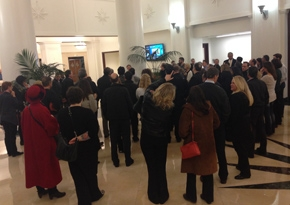
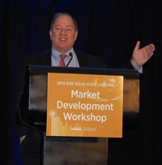
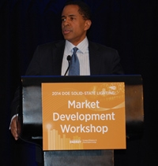
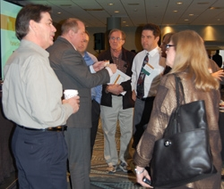
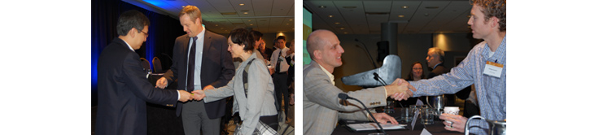
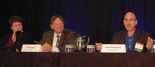
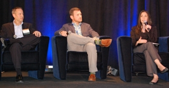

Nearly 200 lighting leaders from across North America gathered in Detroit from November 12–13, 2014, for the ninth annual Solid-State Lighting (SSL) Market Development Workshop, hosted by DOE. The diverse audience spanned the spectrum of SSL stakeholders, representing lighting, control, and components companies as well as research institutes, academia, national laboratories, municipalities, designers, specifiers, and distributors. The workshop’s purpose was to create a forum for airing application and performance issues related to the current level of solid-state lighting technology development, and to explore emerging capabilities being enabled by ongoing advances in SSL and controls technology.
Pre-Conference Guided Bus Tour
The workshop was preceded the night before by a guided bus tour showing Detroit-area LED lighting in action. The first stop was the Chrysler House, a high-rise office building that includes a three-floor LED and energy efficiency experiment run by Bedrock Real Estate Services, Nextek, TOGGLED, and NextEnergy. With a baseline on the 14th floor, the 15th and 16th floors demonstrate direct-current (DC) 18.3W LED replacements for 112 fluorescent tubes, with added savings on the 16th floor via the introduction of motion and daylighting control systems. The building feeds real-time energy use information to an easy-to-read, remote-accessible dashboard that attendees saw in action, followed by a Q&A with experts responsible for the system.
The final stop on the bus tour was the headquarters of Detroit-based green technology accelerator NextEnergy, which hosts an energy efficiency and LED demonstration site featuring the products of a number of Michigan-based SSL and control system manufacturers. Attendees observed outdoor lighting products, including grid and off-grid parking lot luminaires, decorative light poles, and wall packs; and indoor luminaires including downlights, DC-powered troffers, and even a ceiling luminaire that emulates a skylight. Attendees also saw the NextHome living laboratory, a DC-connected super-efficient smart home used to demonstrate, test, and validate next-generation technologies; and a controls demonstration area that featured daylighting, simulator, and additional products.
Opening Session
The workshop began on November 12, with a welcome speech by Detroit Mayor Mike Duggan, who recounted why the city decided to convert 50,000 of its aging streetlights—half of which were no longer functional—to LED. He explained that initially, Detroit intended to replace the streetlights with high-pressure sodium fixtures, but he recognized that this was a “once-in-a-lifetime opportunity” to install state-of-the-art technology, and that the budget was sufficient to allow for LEDs. Duggan noted that despite a few remaining issues, the city is very pleased with its streetlight conversion, which is more than halfway finished and is scheduled to be completed in July 2015.
The workshop’s keynote address was delivered by Byron Auguste, Deputy Assistant to President Obama and Deputy Director of the White House National Economic Council. Auguste observed that Detroit’s streetlight conversion will help to revitalize neighborhoods, make the streets safer, and create jobs, in addition to saving energy. He described DOE’s key role in facilitating Detroit’s streetlight upgrade and noted that the resulting energy savings (estimated at 50%) pale in comparison to the energy that would be saved if all of the country’s streetlights made the switch ($2.3 billion). Auguste also pointed out that many of the city’s new LED streetlights come from U.S. companies and thus benefit the country’s economy. “Don’t bet against Detroit,” he said, “and don’t bet against the United States of America.”
Kerry C. Duggan (no relation to the mayor) of DOE’s Office of the Secretary serves as DOE’s liaison to the City of Detroit, and closed the opening session by highlighting the key role DOE’s Municipal Solid-State Street Lighting Consortium played in Detroit’s LED streetlight conversion, as well as the multipronged efforts being made to revitalize the city.
Trends And Challenges
DOE SSL Program Manager James Brodrick then provided an introduction to the workshop sessions, inviting attendees to learn, share, and participate. He pointed out that SSL is already saving energy, but observed that the 188 tBtu it saved in 2013 is just a drop in the bucket compared to the 4,060 tBtu it could save, and emphasized that the full performance and energy savings potential of SSL are far from realized or assured. Brodrick noted that while actions taken as a result of lessons learned from the early SSL market did result in smoother market entry that would otherwise have been the case, the unique attributes of LED lighting present a host of new challenges impacting market adoption—such as technological challenges, infrastructure limitations, and interoperability issues
The first panel, moderated by Michael Royer of Pacific Northwest National Laboratory (PNNL), focused on the growing trend of using the color-tunability of LED lighting to improve health, productivity, and mood. He set the stage by posing a series of questions to be explored by the panelists: What have we learned about light and physiology so far? How much is left to learn? What practical advice is available for taking action today? Are there potential risks? What products are available? What are the barriers to adoption?
Steven Lockley of Harvard University noted that light has a powerful effect on our bodies, mainly by impacting our circadian rhythm. He explained that this process is mediated in large part by special nonvisual cells in the eye that are particularly sensitive to light in the blue range, at a peak of 480 nm, and that SSL’s spectral tunability gives it a considerable advantage in this regard over other lighting technologies. Lockley noted that office and shiftwork studies conducted during the day and at night show improvements in alertness and performance with higher-CCT (correlated color temperature) light, and pilot studies of students show the benefit of higher-CCT lighting on concentration and performance. He described studies underway to test the effects of a prototype LED polychromatic lighting system on pre-sleep sleepiness, post-wake alertness, and circadian phase resetting for the Space Station.
Leslie North of Aurora Lighting Design explained that her goal as a lighting designer is to light a space so that it functions well and promotes the happiness and productivity of its occupants. She said that with the advent of SSL and all of the value-added features it facilitates, we’re in the midst of “a sea change in lighting.” North observed that most people still think of lighting as static, but that not all spaces are occupied in the same manner, and lighting needs within a space may change based not only on the time of day but also on who the occupants are. She emphasized that it’s important for lighting to reinforce the natural light-dark cycle as much as possible.
John Hwang of Planled said we have an historic opportunity to transform lighting into something much greater than it’s been. He explained that with SSL, lighting can have a positive impact on health in addition to saving energy and money. Hwang described a current project working with the Seattle Mariners to create a tunable lighting system for the team’s Major League baseball stadium, the idea being to create an optimized playing environment. He said the high salaries paid to professional athletes more than justify the cost of such a system. Hwang also discussed a comprehensive guidebook on SSL sports lighting applications, which he’s creating in tandem with the Green Sports Alliance and the HumanCentric Lighting Society, and in addition he talked about the use of lighting to create favorable outcomes in healthcare settings.
Addressing The Overall Lighting System
A panel discussion on systems thinking followed, moderated by Bob Davis of PNNL. Davis noted that while manufacturers often think of an LED lighting system as consisting of hardware and software, lighting designers tend to view lighting as a system of visual cues that affect the user experience in the space. He emphasized the importance of making sure that all such components work together and also work for the people who are using the system. Davis illustrated these points by citing the experiences of two recent GATEWAY demonstrations: one at Princeton University’s Dillon Gymnasium, which involved an LED system combined with simple lighting controls and integrated zone-based occupancy sensing; and the other at the Hilton Columbus (Ohio) Downtown, which features guest-friendly controllable LED lighting in the hotel rooms.
Observing that the lighting industry is becoming more “human-centric” than “product-centric,” Lori Brock of OSRAM Sylvania added that the systems thinking and user-experience design approach places more emphasis on metrics appropriate for the design-intended application, instead of on traditional lighting metrics such as CCT, CRI, and lm/W. “The lighting industry needs to spend a lot less time thinking about light bulbs and a lot more time thinking about people,” she said. Brock noted that by making use of such things as tunability and sensors, SSL has the potential to create user experiences and benefits that can’t be provided by conventional lighting. She illustrated this point with examples from healthcare, hospitality, office, and retail settings.
Rodrigo Manriquez of architectural and engineering design firm SmithGroupJJR reviewed the main challenges of designing an LED lighting system. On the design side, these include understanding the design criteria, aligning client expectations with potential solutions, and defining the “risk partnership” involved. On the technology side, they include keeping up with the latest products and capabilities, understanding budgets, and avoiding pitfalls. Illustrating these points with examples from various settings—such as an airline terminal, a university engineering center, and a computer training facility—Manriquez emphasized that although the back end of such a lighting system can be complex, it’s essential that the user interface be very simple.

Specifying LED in a World OF Continual Change
Next came a panel discussion on the challenges of specifying LEDs when the market is changing and evolving at such a rapid pace. Moderator Naomi Miller of PNNL set the stage for the other three panelists by noting that the life of an LED lighting product may be anywhere from nine months to two years before it's superseded by an updated version, and that new-generation chips may have different electrical needs than their predecessors and require new drivers, which themselves may have different controls compatibilities. As an example, she cited a recent GATEWAY demonstration at the Burden Museum in Troy, NY, that had been delayed for 14 months. Among other things, the specified LED strip lights were no longer available at the needed output level, so the designer changed to a different brand that had a different transformer/driver, which meant that most of the dimming circuits had to be reevaluated for compatibility and load, and many needed an interface module.
Offering a luminaire manufacturer’s perspective, Scott Hershman of LF Illumination observed that the limited lifespan of conventional sources requires them to be a replaceable component separate from the luminaire, but that the coordination required to produce an LED light fixture has forced luminaire manufacturers to assume the role of the source provider. He noted that in most cases, the LED luminaire manufacturer must rely on third-party vendors to supply the system’s solid-state components. To make LED products “future-proof” so that they’re not rendered obsolete by newer generations in the interval between specification and installation, Hershman offered manufacturers a number of suggestions, such as making components replaceable, making parts traceable, and ensuring an upgrade path.
Jim Yorgey of Lutron Electronics said that because there’s little interchangeability of dimmers and LED loads, they need to be designed together as a system. He observed that dimming capability varies widely and that there are multiple dimming protocols and hardware—both wired and wireless. Yorgey called for standards bodies to develop performance- and compatibility-based standards quickly, and for industry to create a third-party testing process that qualifies performance and certifies conformance to those standards. Ideally, he said, manufacturers would provide standard ranges of electrical characteristics for LED modules, field-tunable drivers, and controls that adapt to interchangeable modules, following line and low-voltage control standards. Contractors may need to hire specialists to integrate the controls.
Lighting designer Brienne Willcock of Illuminart noted that a lack of true “equals” makes three-name specification of LED lighting products impossible, that some manufacturers don’t offer replaceable LED system components, and that few have seriously considered sustainability issues. She called for component and dimming standards as well as interchangeability of components, and cited a need for communication between the chip, driver, and controls so that they can adapt to each other. Willcock also advocated adding a controls integrator to the construction process, and changing the design process, construction process, and design fee structure to accommodate the intensive compatibility work that often has to be done during the design documentation phase, at bid time, and again at product order time.
Today's Utility Programs
Liesel Whitney-Schulte of Franklin Energy Services moderated a panel on how utility programs can keep up with the constant changes in LED lighting products. Vicki Campbell of Michigan-based DTE Energy noted that her organization spends about $80 million a year on energy efficiency, about $35 million of which is on commercial and industrial customers. She explained that Michigan has a statewide database that tells how much energy is saved from all of DTE Energy’s initiatives, and that in 2014, 30% of those savings were from SSL, compared with only 1 or 2% in 2009–2010. Acknowledging LED lighting as “the future,” Campbell said DTE Energy is looking forward to its penetration into additional market segments, and to combining LED lighting products with controls to get even more energy savings.
Jackie Ducharme of Xcel Energy said keeping up with the lighting industry is very hard for a utility. Acknowledging that the organization’s lighting portfolio is heading in the direction of SSL, she noted that 60% of Xcel Energy’s rebates are for LED in Minnesota, compared with 43% in Colorado, but she estimated that it would be at least another two or three years before LED rebates surpass those of fluorescent products. Ducharme observed that prescriptive rebates are the most popular way for the market to quickly transform, adding that it takes at least three months to get a product approved by the commission, by which time the product is already outdated. She said one of the bigger challenges utilities face is the learning curve in the marketplace. “There’s still some resistance to change,” she said.
Cory Gordon of Duke Energy said 10% of his organization’s overall spending is on LED lighting incentives, but as yet there are no requests from the regulators for incentives on controls. “Everyone sees controls as a way to further lighting efficiency,” he said. “But the challenge is predictability. There’s not a lot of confidence in the ability to predict savings from controls.” Gordon said that all of Duke Energy’s lighting programs require a listing with either ENERGY STAR® or the DesignLights Consortium®’s Qualified Products List, except for custom fixtures. He said it would be helpful to receive information from manufacturers about SSL products before they actually hit the market. “Secrecy inhibits our ability” to stay on top of the market, he said.
Marci Sanders of D&R International then moderated a panel discussion that was similar to the one that preceded it but gave the manufacturer’s perspective. Don Barus of Hubbell Lighting Controls said the biggest challenge his company faces, with regard to working with utility programs, is communication. “I’ll get a call saying ‘I need 8,000 fixtures tomorrow,’ and they need it installed in 30 days,” he said. “How do you come up with the components?” Barus said there has to be strong relationships between manufacturers and utilities. “These opportunities are tremendous, but in some cases we can’t service them appropriately because of lack of planning,” he noted. Barus said Hubbell Lighting Controls takes as proactive an approach as possible to working with utility programs, and called the use of controls with SSL “the thing of the future.”
Kandice Cohen of Eaton’s Cooper Lighting said she considers qualifications programs such as ENERGY STAR and the DLC’s Qualified Products List (QPL) an absolute priority, and noted that her company designs every product to fit them. But she said SSL technology is evolving so rapidly that it’s tough to keep up. “As soon as a product is qualified, there’s a new generation that has to be qualified,” she said. Cohen made the point that there’s much more to lighting than energy savings, and that LEDs “allow us to push the boundaries so much further than we ever have." She cited the need to figure out how to include controls for greater energy savings, and called for open communication between manufacturers and utilities. “If we’re working together, we can meet common goals,” she said.
Kris Evans of Cree said his company recognizes the value of utility programs and engages with them. He encouraged utilities to share data with manufacturers, which would help to show them the value of having products listed on qualified products lists like the QPL. Evans acknowledged that manufacturers themselves are not always forthcoming. “There’s a lot of secrecy, and that’s a challenge for us as well, within the organization,” he said. “We’re working to break those barriers down. Evans emphasized that it’s no longer a choice between energy savings and a high quality of light. “We can have both now,” he said.
At an evening reception sponsored by the Next Generation Lighting Industry Alliance, attendees had an opportunity to network and to interact with hands-on exhibits of indoor and outdoor Best in Class winners from the Next Generation Luminaires design competition. In addition, there were representatives on hand from the newly formed OLED Coalition as well as from Acuity, to talk about OLED lighting and show Acuity’s products that were recognized in NGL’s Emerging category. And Silvia Mioc of Rensselaer Polytechnic Institute’s Smart Lighting Engineering Research Center exhibited research on technologies related to smart-lighting concepts.
, and RPI’s Smart Lighting Research Center (right).")
Market Trends And Lessons Learned
Kelly Gordon of PNNL gave an update on the various efforts being made to address the early lessons from SSL’s market entry, as detailed in a January 2014 DOE report. She reviewed all 12 early lessons from the report and then considered the progress that’s been made along those lines. For example, rigorous testing requirements adopted in the early days of SSL to counter exaggerated performance claims eventually led to unreasonably high testing costs for manufacturers, but a move toward family-grouping on the part of such programs as LED Lighting Facts, the DLC’s QPL, and ENERGY STAR has substantially reduced those costs.
A panel on current and emerging SSL market trends followed. Moderator Mary Yamada of Navigant reviewed the highlights of DOE’s most recent edition of the report Energy Savings Forecast of Solid-State Lighting in General Illumination Applications. She demonstrated an accompanying online interactive tool that allows users to adjust four key input variables to better understand how changing them affect the forecasted LED penetration and energy savings. Yamada noted that LEDs are forecasted to reduce U.S. lighting energy consumption by 40% in 2030—and that this reduction would increase to 60% if DOE’s ambitious goals for LED price and efficacy are realized by all LED lighting products.
Dan Mellinger of Efficiency Vermont highlighted trends seen in his state, which he said is often a leading adopter of energy-efficient technology. He reviewed the results of a survey intended to estimate Vermont market penetration for commercial and industrial lighting measures, identify future attainable savings potential, and provide market analysis insight to help shape long-term goals and strategies. Mellinger said energy efficiency programs must act now on emerging LED categories, making sure to address product availability, promotion, and application guidance. He emphasized that solutions must incorporate controls for increased energy savings. Noting that conventional program approaches won’t be enough, Mellinger called for creative solutions to address education, product availability, controls, and promotion.
Maury Wright of LEDs Magazine discussed the evolving packaged-LED sector and how packaged LEDs impact SSL product development. Remarking that packaging, or lack of it, keys advancements, he said that minimal or chip-scale packaging (CSP) will not only provide product developers with increased flexibility but will also lower component costs, and that advancements in wafer-level processing can further reduce LED costs. However, Wright observed that CSP will be hard for some lighting companies to handle, resulting in new business models or even more contract manufacturing. He noted that improvements in both phosphor-converted white LEDs and red-green-blue LED technology are leading to better SSL products, and that the biggest evolution is toward better color quality.
Interoperability Of Control Systems
Michael Poplawski of PNNL moderated a panel discussion on the need for improved interoperability among control system components. He set the stage by noting that there are many possible types, or levels, of interoperability, and that rarely does one “protocol” define and deliver full interoperability, and many do not address the “application level,” which most affects the user experience. Rather, Poplawski said, interoperability should be carefully specified. He reviewed existing interoperability standards, presented some basic interoperability questions to ask when purchasing or specifying control systems, and made a number of recommendations, including letting go of past experiences and approaches, leveraging new industry specification development, and demanding managed compliance testing.
Pekka Hakkarainen of Lutron and the Connected Lighting Alliance talked about the Alliance’s work to promote wireless lighting systems, emphasizing that it’s important for the industry to lay this kind of groundwork now rather than later. “We are in many ways shifting toward wireless connectivity in the lighting space,” he said. Hakkarainen noted that the Alliance was formed out of the need for a common open standard but is not a standards development organization; rather, the idea is to support movement of existing standards into the market-adoption phase. He explained why the Alliance endorsed ZigBee Light Link, and why Lutron is playing a key role.
Paul Dunn of Telensa and the TALQ Consortium discussed the Consortium’s efforts to make street lighting interoperable, which will minimize the risk of stranded assets and thus encourage the market to grow. He noted that with TALQ, a customer can have a single central management system (CMS) to manage outdoor lighting networks (OLNs) from multiple vendors, and that the TALQ Specification includes a features set that enables operation and management of OLNs with different architectures, technologies, and capabilities. Dunn explained that the mandatory part of the TALQ Specification focuses on the minimal level of interoperability to meet customer needs, while the extended optional part allows the industry to differentiate and the specification to evolve.
Smart Lighting
 and Partha Dutta of RPI’s Smart Lighting Engineering Research Center (middle) weighed in on the future of smart lighting and what it could mean to our everyday lives.") Andrea Wilkerson of PNNL moderated a panel on smart lighting. She noted that the market for smart lighting chips will be about $530 million by 2018, growing to $1.3 billion by 2020, and that annual sales for occupancy sensors, photosensors, and lighting network gear related to LED lighting applications will grow from $1.1 billion in 2013 to $2.7 billion by 2020. Observing that the major goal of smart cities is to save energy, Wilkerson outlined other potential uses of smart lighting, such as programming it to pulse when the baby wakes or when someone comes to the door, or to track shoppers in retail settings. She said about 1,000 U.S. retail locations are already using or experimenting with some form of this latter use.
Andrea Wilkerson of PNNL moderated a panel on smart lighting. She noted that the market for smart lighting chips will be about $530 million by 2018, growing to $1.3 billion by 2020, and that annual sales for occupancy sensors, photosensors, and lighting network gear related to LED lighting applications will grow from $1.1 billion in 2013 to $2.7 billion by 2020. Observing that the major goal of smart cities is to save energy, Wilkerson outlined other potential uses of smart lighting, such as programming it to pulse when the baby wakes or when someone comes to the door, or to track shoppers in retail settings. She said about 1,000 U.S. retail locations are already using or experimenting with some form of this latter use.
Partha Dutta of Rensselaer Polytechnic Institute’s Smart Lighting Engineering Research Center said SSL has the potential to make people healthier and more productive, produce significant energy savings, and provide wireless, optical access to the Internet. But he said it can go beyond that to also interface with building management systems, transmit high-speed wireless data, and locate and classify illuminated objects. Dutta noted that scientists are investigating how to create efficient lighting systems that see where the light is going and what it’s doing, communicate using light to send information and enable lighting information processing, and design novel control systems that think about what the light needs to be doing to meet the expectations and requirements of people.
Susanne Seitinger of Philips Color Kinetics discussed a wide range of novel potential uses for smart lighting—from embedded light pavers that announce the arrival of a subway train, to lights that allow museum visitors to interact with exhibits, to ways in which lighting can maximize pedestrian walking speed. She said that to leverage digital light at the city scale, the SSL industry has to focus on diverse stakeholders’ needs—business processes, workflows, and vision—and support their operational workflows with state‐of‐the‐art software, provide easy ways to connect to their light points, and continue to deliver the best lighting products.
Utility Lighting Programs of the Future
Marc Ledbetter of PNNL moderated a panel on utility lighting programs of the future. Panelist Chris Corcoran of the New York State Energy and Resource Development Authority (NYSERDA) spoke from his recent experience as a lighting program manager at Pacific Gas and Electric about addressing decreased savings and increased costs moving forward. He observed that new assumed baselines for lamp efficacy (CFLs) reduce potential energy savings from new lamp installations, and that new products such as LED lamps and luminaires are more expensive, posing a challenge to utility programs. Emphasizing that such programs can’t be “one size fits all,” Corcoran said that with one-for-one retrofits, programs should push for the best-performing products, such as high-performance linear fluorescent troffers and high-efficacy LED retrofit kits and troffers, and should update assumed savings and costs as often as possible, because SSL is moving too fast to be pinned to savings numbers and costs that are several years old.
Kenn Latal of ICF International, speaking from his perspective as a New York state program implementer, discussed transforming the market through quality lighting. He made the point that a good utility lighting program not only is based on market transformation rather than resource acquisition, but is also technology-neutral, focuses on lighting quality, teaches designing better-than-code rather than one-for-one replacement, and encompasses the whole lighting project rather than just the energy-efficient product. Latal described the quality metrics, program evolution, program variations, and accomplishments of the Commercial Lighting Business Partners Program, which is administered by NYSERDA and aims to transform the hard-to-reach small commercial market through extensive training of mid-market players.
Kelly Sanders of Northwest Energy Efficiency Alliance noted five trends that are forcing programs to look at program design differently: the Internet of things (IoT), big data, distributed energy resources, and growth in organizational maturity. Watching for the strategic inflection point of each trend allows them to be leveraged for accelerated customer adoption and, therefore, increased energy savings. Sanders said LEDs bring better light controllability with energy savings; the IoT, better reporting; and data, deeper views into usage—but standardization and interoperability pose significant hurdles. He noted that at various intersections of user maturity and system complexity, programs could be offered to increase energy savings and persistence. Sanders presented a “systems maturity matrix” that can be used to evaluate program effectiveness.
Brodrick concluded the workshop by thanking participants for their input and participation. He noted that the next DOE SSL workshop—the 12th annual SSL R&D Workshop—will be held in San Francisco January 27–29, 2015, and he encouraged attendees to stay apprised of all DOE SSL program activities by visiting www.ssl.energy.gov.